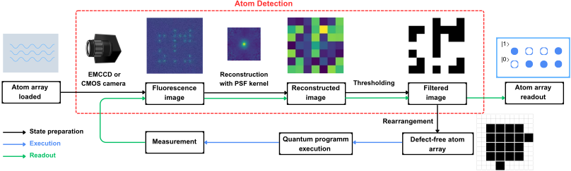
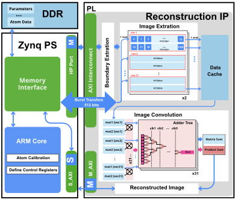
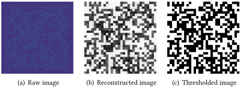
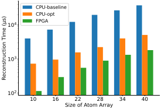

Highly-Parallel Atom-Detector Accelerator for Tweezer-Based Neutral Atom Quantum Computers
面向基于光镊的中性原子量子计算机的高并行度原子探测加速器
简介
中性原子量子计算机（NAQC）每个运行循环需多次荧光成像与原子状态检测，图像分析耗时是整体 cycle time 的关键瓶颈，容错计算中的 mid-circuit measurement 更要求 μs 级实时探测。论文选取精度接近全局求解器但计算量小的投影式状态重建算法，先做算法级裁剪并用 OpenMP 得到高并行 CPU 版本，再用 Vitis HLS 在 Xilinx UltraScale+ RFSoC 上实现数据流架构的 FPGA 加速器：四个流水模块、32-bit 拼接为 512-bit 的 AXI 突发传输、按单原子粒度预取使 BRAM 占用与阵列规模解耦、31 路并行向量单元加对数归约加法树。结果显示 256×256 图像分析仅 115 μs，较 CPU 基线加速 34.9×、较优化 CPU 加速 6.3×；40×40 阵列为 1.825 ms（20.6×/2.8×）；资源约 1/4 LUT、15% FF 且随规模增大保持恒定。该工作属于量子计算控制领域的 FPGA/HLS 加速器设计，与团队存储/互连 IP 的架构、RTL 与验证职责无直接交集。
问题
中性原子量子计算机（NAQC）在 NISQ 运行循环中荧光成像与状态检测已需执行两次，容错量子计算的 mid-circuit measurement 还需在深电路中反复测量，且近期工作要求读出推向 μs 量级，因此实时原子探测（荧光图像分析）成为 NAQC 的关键瓶颈。论文要解决的是如何将原子探测大幅加速、运行时间确定，并使资源占用不随原子阵列规模增长，从而可集成进全 FPGA 控制系统。
方法
软硬件协同设计两步走。算法层：选用 Wei 的投影式状态重建算法（用 PSF 的 Moore-Penrose 逆核与局部图像逐元素乘加求和后阈值判决），将逆核计算、网格检测与阈值标定移入离线标定阶段；针对光镊大间距场景裁剪相位估计等冗余步骤，重构控制流并以 OpenMP 并行化得到 CPU-opt 基线。硬件层：以 HLS 兼容 C++ 经 Vitis HLS 2024.2 综合出定制 reconstruction IP，Vivado 2024.2 集成于 ZCU216（100 MHz）；采用数据流架构划分 boundary extraction/image extraction/image convolution/output aggregation 四级实现 task-level parallelism；将 16 个 32-bit 数据拼接为 512-bit 向量走 AXI burst 以打满带宽；因 BRAM 有限，采用单原子粒度数据缓存加预取，使资源占用与图像尺寸解耦；卷积模块部署 31 个并行向量处理单元，用四级对数归约加法树将 31 元素求和压缩到 5 个时钟周期，并将数组完全分区到寄存器以消除访存冲突；PS 侧 ARM 经 MMIO/Python API 控制启停。
关键结果
256×256 像素图像（10×10 原子阵列）分析耗时 115 μs，较 CPU-baseline（4012 μs）加速 34.9×，较 CPU-opt（730 μs）加速 6.3×
40×40 阵列（1024×1024 像素）耗时 1.825 ms，较 CPU-baseline（37.600 ms）加速 20.6×，较 CPU-opt（5.100 ms）加速 2.8×
50 次重复实验中 FPGA 版本运行时间标准差显著低于两个 CPU 版本，执行时间更确定
资源占用约为 1/4 LUT、约 15% FF，DSP 与 BRAM 占用很低，且随原子阵列从 10×10 增至 40×40 保持不变
平台与工具链：Xilinx UltraScale+ RFSoC ZCU216 @100 MHz，Vitis HLS 2024.2 综合打包 IP，Vivado 2024.2 完成系统集成与实现
创新点
已有 FPGA 去卷积加速多针对 Richardson-Lucy 类算法，因计算强度在大 kernel/高分辨率下面临可扩展性难题；QuEra/Bluvstein 的 FPGA 译码方案不公开且无算法细节。本文的差异在于：选择精度接近全局求解器但执行时间远小的投影式状态重建算法作为基础，通过算法裁剪加数据流/预取架构，实现资源占用与阵列规模解耦的可扩展 FPGA 实现，并给出公开、可量化的延迟/稳定性/资源评估。
团队参考意义
相关度级别：low
命中能力域：无明显对应
理由：论文面向中性原子量子计算机的原子探测加速，属于量子计算控制领域的 FPGA/HLS 加速器工作，与团队在 LPDDR/HBM/DDR5、UCIe 等存储与互连 IP 上的架构、RTL 与验证交付职责无实质交集。文中用到的数据流流水、预取隐藏 DDR 延迟、AXI 位宽拼接打满带宽、加法树归约、寄存器分区等均为团队已熟练掌握的标准工程手段，不构成方法学增量；论文也不涉及 STA/时序收敛、UVM/覆盖率、formal、emulation/FPGA 原型验证等任一能力域的核心技术或代表工程场景，因此七个域均无命中。
建议动作：暂不相关
中文全文
arXiv:2604.00816v1 [quant-ph] 1 Apr 2026
面向基于光镊的中性原子量子计算机的高并行度原子探测加速器
Highly-Parallel Atom-Detection Accelerator for Tweezer-Based Neutral Atom Quantum Computers
Jonas Winklmann ∗ 慕尼黑工业大学 德国加兴 jonas.winklmann@tum.de Yian Yu ∗
慕尼黑工业大学 德国加兴 yian.yu@campus.lmu.de
Korbinian Staudacher 慕尼黑工业大学 德国加兴 staudacher@nm.ifi.lmu.de Xiaorang Guo 慕尼黑工业大学 德国加兴 xiaorang.guo@tum.de Martin Schulz 慕尼黑工业大学 德国加兴 martin.w.j.schulz@tum.de
ACMReference Format:
Jonas Winklmann、Yian Yu、Xiaorang Guo、Korbinian Staudacher 和 Martin Schulz。2026。面向光镊中性原子量子计算机的高并行度原子探测加速器。载于第63届 ACM/IEEE 设计自动化会议（DAC '26），2026年7月26-29日，美国加利福尼亚州长滩。ACM，美国纽约州纽约，共7页。https://doi.org/10.1145/3770743.3804354
1 Introduction
通过显微成像分辨单个原子的能力极大地推动了多体物理和量子模拟领域的实验进展 [3, 11, 16, 18, 19]。随着量子计算的出现以及将中性原子（NAs）用作计算平台的兴趣日益增长，成熟的中性原子技术正面临挑战：需要提供一种快速且集成化的解决方案，以与超导量子比特等其他技术路线竞争。
图 1 展示了含噪中等规模量子（NISQ）时代中性原子量子计算机（NAQC）的基本运行周期，其中不考虑纠错轮次 [25]。该周期由四个主要阶段组成。首先，制备原子并将其装载到二维光镊阵列中。其次，通过成像检测原子位置，并重新排列原子以形成用于计算的无缺陷原子阵列。第三，在组装好的阵列上执行量子电路。最后，在读出阶段测量每个量子比特的量子态。如图 1 所强调的那样，在 NISQ 级别的计算循环中，荧光成像和态探测已经需要执行两次。在容错量子计算中，这一需求变得更加频繁，因为必须在深层量子电路中反复执行电路中途测量 [6]。此外，最近的研究表明，电路中途读出应被推进到 “𝜇𝑠” 量级，以便在实际量子计算机中支持多轮重复测量 [4]。因此，实时原子探测是中性原子量子计算机的一个关键瓶颈。
此外，在软件效率的进步与并行控制硬件的开发之间，仍然存在一道鸿沟。如果希望将中性原子量子计算推进到传统硬件开发者将其视为一台计算机而非快速实验室实验的程度，就必须存在一种快速、稳健且足够独立、无需频繁依赖人工干预的集成控制解决方案。在这种情况下，现场可编程
Abstract
中性原子量子计算机（NAQCs）是最有前景的量子计算平台之一。对单个原子及其状态进行控制与测量通常需要多次成像和图像分析流程，这往往是计算过程中最耗时的任务，并在整体循环时间中占据相当大的比重。为解决这一挑战，我们提出了一种面向基于光镊的中性原子量子计算机的高并行度原子探测加速器。我们的设计基于一种现有的态重构方法，将算法级优化与现场可编程门阵列（FPGA）实现相结合，以最大化并行度并缩短图像分析流程的运行时间。我们识别并克服了 FPGA 实现中的若干挑战，例如引入预取机制以提升可扩展性，以及定制总线传输以支持大带宽。
在 Xilinx UltraScale+ FPGA 上的测试表明，我们的设计仅需 115 𝜇𝑠 即可分析一幅 256 × 256 像素的荧光图像，相比原始 CPU 基线和优化后的 CPU 基线分别取得 34.9 × 和 6.3 × 的加速。此外，我们的加速器能够在各种原子阵列规模下保持一致的资源利用率，为构建面向 NAQCs 的可扩展且完全集成的基于 FPGA 的控制系统这一持续努力做出了贡献。
CCS Concepts
· 硬件 → 量子技术；硬件加速器；高层次与寄存器传输级综合。
Keywords
Quantum Computing, Neutral Atoms, Atom Detection, Image Reconstruction, FPGA
∗ Both authors contributed equally to this research.

This work is licensed under a Creative Commons Attribution 4.0 International License.
DAC '26, Long Beach, CA, USA © 2026 Copyright held by the owner/author(s). ACM ISBN 979-8-4007-2254-7/2026/07 https://doi.org/10.1145/3770743.3804354
© Winklmann, Yu, Guo, Staudacher, Schulz 2026. This is the author's version of the work. It is posted here for your personal use. Not for redistribution. The definitive Version of Record was published in 63rd ACM/IEEE Design Automation Conference (DAC '26), DOI 10.1145/3770743.3804354.

gate array (FPGA)-based control architectures emerge as a promising solution, delivering a low-latency, programmable hardware required for real-time atom detection tasks.
Therefore, in this work, we propose a highly parallel atomdetection accelerator based on an optimized state-reconstruction approach . Our solution utilizes the hardware-software co-design strategy first to optimize an existing atom detection method, namely the projection-based state-reconstruction algorithm [22], to obtain a CPU-optimized version with high inherent parallelism and streamlined logic. Building on this, we then develop an FPGA-based atom-detection accelerator that, once connected to a camera, can directly bridge the gap between image generation and FPGA-based rearrangement [10, 21] or readout procedures. Typically, the detection accelerator connects to the camera directly via a CoaXPresscapable FMC daughter card. However, since we focus on the algorithm and FPGA designs in this work, we preload atom images into the Double Data Rate (DDR) memory as a replacement for live camera input. Moreover, with many microwave-pulse-generation platforms already being based on FPGA [15, 20, 26], the vision of a fully-integrated sorting and readout device is nearing completion.
We implement and evaluate the atom-detection accelerator on FPGA with extensive experiments of different atom array sizes. As a result, our accelerator achieves up to 34.9 ×/ 6.3 × compared to the original implementation and our CPU-optimized implementation, respectively. Furthermore, the resource utilization remains stable for different atom array sizes due to our efficient prefetching mechanism. The results demonstrate a fast and scalable atom detection unit based on FPGA, contributing to faster operation cycle of NAQCs.
In summary, our main contributions include
2.1 Atom Detection Algorithm
反卷积算法已被广泛用于解决原子检测任务。La Rooij 等人比较了多种候选方案，其中 Richardson-Lucy 算法在检测精度方面表现最佳，Wiener 反卷积紧随其后 [14]。Winklmann 等人在其算法集合的基础上进一步扩展，引入了若干更为复杂的专用算法，例如全局非线性最小二乘求解器和 Wei 的状态重建库 [22]。他们得出的结论是，精度与算法执行时间之间存在明显的权衡关系 [23]。
在上述各种可行方案中，我们认为 Wei 的基于投影的状态重建算法最为合适，因为其性能非常接近整体上最精确的全局求解器，而执行时间却大幅缩短。该算法最初面向间距小得多且阱位置存在漂移的晶格中的状态检测而设计 [22]，其部分特性，例如相位检测以及基于亚像素位置的独立投影核，对于原子位置彼此充分分离的装置而言似乎显得多余。在省略这些步骤之后，其概念上相对复杂这一表面上的缺点便不复存在，最终只剩下若干逐元素矩阵乘法，我们将在第 3 节中对此加以说明。我们所处理的是一种在每个原子位点上重复执行一次的简单直接的计算，这一事实为在现场可编程门阵列（FPGA）上采用流水线执行铺平了道路。
2.2 Deconvolution on FPGAs
据我们所知，仅有少量先前工作探索了基于 FPGA 的反卷积方法来降低计算延迟。已有若干 Richardson-Lucy 加速器 [1, 2, 5] 被提出用于运动图像和高光谱图像重建。然而，由于该算法的计算强度较大，这些方法在 FPGA 上面临可扩展性方面的挑战，尤其是在卷积核尺寸较大或输入图像分辨率较高的情况下。
面向基于光镊的中性原子量子计算机的高度并行原子检测加速器
值得注意的是，Bluvstein 等人采用了一种基于 FPGA 的量子比特解码方案，该方案是与 QuEra Computing 合作开发的。其所需的解码时间与曝光和图像读出时间相比显得微不足道 [4]。遗憾的是，他们并未说明其分析算法的细节，且其解决方案也未公开。尽管如此，能够看到一种产业界与研究机构均在使用的集成控制解决方案，仍然十分令人鼓舞。
如第 2.1 节所述，存在一种精度经证明具有竞争力的算法，非常适合加以改造后用于 FPGA。因此，在本文中，我们基于这一状态重建算法构建了我们的检测加速器，该算法主要依赖卷积运算。在这种情况下，我们可以受益于资源复用与并行计算，从而在延迟和硬件效率两方面均获得提升。
3 Algorithm
相机所收集光子的空间分布可以表示为每个原子位置处的亮度与点扩散函数（PSF）的卷积，后者表示光学成像系统对点状光源或单位脉冲的响应 [9]。由于所得数值被离散化为像素值，并且假设背景光照可忽略不计，点状光源的数量是有限的，因此该卷积可以简化为每个原子位点的 PSF 乘以其亮度后的求和 [22]。
Winklmann 等人将像素 𝑥 处记录到的光电子期望数表示为 𝜆 ( 𝑥,𝛾 ) = 𝑏 + 𝑛 𝑖 = 0 𝑃𝑆𝐹 𝑖 ( 𝑥 ) · 𝛾 𝑖，其中 𝑏 为背景光照，𝑛 为原子位置数，每个原子位置由其 PSF 𝑃𝑆𝐹 𝑖 ( 𝑥 ) 和亮度 𝛾 𝑖 描述 [23]。
所选的状态重建算法基于如下假设：由于该方程是线性的，我们可以找到一个逆 PSF，从荧光图像的像素值中重建出初始亮度。为此，需要计算 PSF 的 Moore-Penrose 逆，并针对每个原子位点，将其与以该位置为中心、大小相同的图像细节进行逐元素相乘。该乘法结果之和作为发射值，利用一个阈值即可判定每个位点是否包含原子 [22]。
3.1 Calibration
正如 Wei 所指出的，获取 PSF 的逆是整个计算中最耗时的环节 [22]。然而，除非实验装置本身发生改变，PSF 几乎不会变化。因此，我们无需在每次运行该计算时都对其进行更新。相反，我们将其与其他无需在每个周期执行的任务一起，移至一个前置的校准阶段，在该阶段中执行时间并非关键。
在输入一组示例图像后，校准流程会自动检测原子网格的位置与角度，提取每个位点的 PSF，并计算逆核与检测阈值。该校准以离线方式执行且频率很低，其结果在多次实验拍摄（图像帧）中均保持有效。
3.2 Runtime
在运行时，我们仅执行计算中在每个计算周期内变化不可忽略的那些部分。由于满足这一条件的唯一变量是荧光图像本身，因此运行时需要执行的唯一计算就是与投影核进行逐元素乘法，以及随后的求和与阈值化。
3.3 Optimization
由于我们希望得到一种能够集成到基于 FPGA 的控制系统中的解决方案，直接采用原始算法 [22] 并不高效，因为该算法本质上是串行的，且算法结构复杂。因此，我们首先遵循软硬件协同设计方法，对算法进行重新表述与优化，使其能够在中央处理器（CPU）上高效执行，并可选择在图形处理器（GPU）上执行。在开发过程中，我们观察到，由于程序中适合在 GPU 上运行的部分本身已经相对较快，而将数据从 CPU 传输到 GPU 又需要不可忽略的时间，因此使用该版本的优势无法始终得到体现。因此，在后续章节中我们将仅使用 CPU 版本，并将其称为 CPU-baseline。
由于该算法主要面向小得多的原子间距，其某些方面（例如相位估计）对于基于光镊的装置（即本工作所使用的装置）而言是多余的或过度的。因此，我们进一步将其精炼为一种专门针对较大间距、仅在 CPU 上运行的量身定制解决方案。我们还对算法进行了重构，以揭示其固有的并行性并简化控制流。我们没有将并行部分部署到 GPU 上，而是选择采用 OpenMP，以便在利用并行化能力的同时，避免两个设备之间传输时间带来的缺点。我们将这一版本称为 CPU-optimized 版本，它是后续 FPGA 加速器设计的基础。需要指出的是，尽管在该用例下两个版本的输出实际上难以区分，但 CPU-baseline 与 CPU-optimized 版本所提供的功能并不完全相同，任何性能上的提升都是以降低对更小原子间距和相位漂移等约束条件的适应性为代价的。
4 FPGA implementation
在本节中，我们讨论原子检测加速器的硬件设计，重点介绍作为该设计核心的定制化重构知识产权（IP）。我们首先概述 FPGA 上的系统架构，然后详细介绍加速器模块的结构。
4.1 System Overview of Atom-Detection Accelerator
图 2 展示了我们基于 FPGA 的加速器的系统概览，其中可编程逻辑（PL）与处理系统（PS）协同工作，以检测原子位置并执行状态重构算法。在 PS 侧（ARM 处理器），首先实现初步原子校准，DAC '26, July 26-29, 2026, Long Beach, CA, USA

该步骤被提及为系统搭建完成后的必要步骤。通过这一过程，近似的原子坐标、荧光图像以及卷积核信息被存储在 DDR 存储器中。如前所述，预先将图像存储在存储器中只是通过 CoaX
4.2 Reconstruction IP
我们的专用硬件方法在状态重构过程的并行执行方面带来了显著优势。整个检测加速器采用数据流设计，如图 2 右侧所示，在四个主要模块之间实现了任务级并行：边界提取（boundary extraction）、图像提取（image extraction）、图像卷积（image convolution）和输出聚合（output aggregation）。
在加速器启动之前，我们已将原子位置网格、点扩散函数（PSF）核（本文使用 31 × 31）以及整幅荧光图像加载到 DDR 存储器中。对于原子阵列中的每个原子，边界提取模块负责获取与其预定义坐标相对应的局部图像边界。基于所获得的索引，图像提取模块通过第 4.1 节中提到的 512 位 AXI 总线从 DDR 存储器中读取相应的图像细节以及 PSF 核。在此阶段，长的 512 位向量被解码回正常的 32 位数据，同时 PSF 核被处理成所谓的投影器（projector），作为图像卷积模块的输入。
值得注意的是，由于块存储器（BRAM）资源有限，将所有数据都存储到 BRAM 中是不可行的，因为 BRAM 的需求量会随着原子图像尺寸的增大而迅速增长。为解决这一可扩展性问题，我们在加速器中采用了数据缓存，每次只需加载单个原子的像素数据和投影器，从而使 BRAM 的消耗保持稳定。得益于数据流架构，在当前原子像素进行卷积期间，下一个原子的数据会被预取，因此可扩展性方面的挑战得以消除。在图像卷积模块内部，两项计算并行执行：(1) 我们计算原子图像细节与投影器核之间的逐元素矩阵乘法，得到该乘积的累加和，称为乘积和（product sum）（图 2 中图像卷积模块内的粉色箭头）；(2) 我们计算投影器矩阵中所有元素之和，称为矩阵和（matrix sum）（图 2 中图像卷积模块内的蓝色箭头）。在此计算过程中，我们采用完全并行化的方法，将矩阵运算分解为 31 个并发的向量处理单元（由 PSF 核的尺寸决定），每个单元内部均实现并行化。此外，为了降低求和计算的延迟，我们部署了对数归约算法，将 31 个元素向量的求和分解为 4 个并行阶段，从而构建出加法树结构。在这种情况下，我们可以将计算延迟从 𝑂 ( 𝑛 2 ) 降低到 𝑂 ( 𝑙𝑜𝑔 ( 𝑛 )) ，因此能够在 5 个时钟周期内完成 31 个元素的加法计算。
此外，矩阵数据最初存储在块 RAM（BRAM）中，由于存储器依赖性问题，这限制了并行化因子，因为我们无法一次性从存储器中读取 31 个值。因此，我们创建了一个新的向量空间，并将数组完全划分到寄存器中，从而消除了存储器访问冲突，使各运算能够同时进行。
最后，输出聚合模块根据公式 1 为上一步得到的每个卷积结果计算归一化值，从而给出每个原子位点上的归一化亮度。
其中，卷积核 𝐾 与局部荧光图像细节 𝐼 逐元素相乘所得之和，再与所用卷积核值之和的分数相乘。当卷积核平移至所考察的原子位置时，当且仅当索引为 𝑖 和 𝑗 的卷积核像素落入图像范围内，才有 𝑢 ( 𝑖, 𝑗 ) = 1；否则 𝑢 ( 𝑖, 𝑗 ) = 0。其作用在于对图像边缘处完整卷积核无法完全容纳的原子位点的重构发射强度进行归一化。𝑖,𝑗 ( 𝐾 [ 𝑖, 𝑗 ] · 𝑢 ( 𝑖, 𝑗 )) 本质上就是前文所述的矩阵和。随后，如第 3 节所述，将归一化后的发射值与阈值进行比较，据此确定每个原子的重构状态。
基于光镊的中性原子量子计算机的高并行度原子检测加速器

5 Experiments and Evaluation
本工作的评估包含两个方面：具体而言，1）重构算法的结果/输出，以及 2）不同平台之间的运行时性能比较。在运行时比较中，我们考虑三种测试用例：文献 [22] 中提出的原始基于 CPU 实现的轻微优化版本（CPU-baseline）、我们进一步优化并针对基于光镊的装置进行精简的 CPU 版本（CPU-opt），以及基于现场可编程门阵列（FPGA）的加速器。CPU 实验在一颗 AMD EPYC 9374F 32 核处理器上进行测量，该处理器属于 AMD CPU 的高频产品线型号，以确保高串行性能与可观的并行性。FPGA 实验在 Xilinx UltraScale+ RFSoC ZCU216 开发板 [12] 上进行，该开发板经编程配置为以 100 MHz 运行。我们采用与高级综合（HLS）兼容的 C++ 开发该加速器，并使用 Xilinx Vitis HLS 2024.2 对定制的 IP 核进行综合与封装。最终的系统集成与实现则在 Xilinx Vivado 2024.2 中完成。
5.1 Reconstructed Image
图 3 展示了将我们的原子检测算法应用于一个 30 × 30 原子阵列的结果示例。在本实验中，我们首先采用来自文献 [24] 的仿真图像（参见图 3(a) 作为一例）来替代真实相机图像，因为就评估目的而言，其质量已足够相似。经过重建过程后，我们得到所谓的发射矩阵（emission matrix），其中的发射值表示原子的亮度。以较暗的像素表示较高的发射值，我们生成了如图 3(b) 所示的原子重建图像。如第 3 节所述，在用预定义阈值对这些发射值进行处理后，我们将得到最终的 '0' 和 '1' 矩阵作为最终的原子检测结果，该结果可以

(a) 运行时间
250
200
150
100
50
(b) 运行时间的标准差
在图 3(c) 中看到。我们可以将此布尔数组用于后续的原子重排步骤。
由于该算法的精度已在先前工作中得到证明 [23]，因此对我们而言，只需确保我们的实现结果与原始结果不发生偏差即可。我们注意到会出现一些极微小的差异，这些差异可归因于舍入误差。
5.2 Run Time of Atom Detection
5.3 Resource Utilization
除检测算法的运行时间外，资源利用率是另一项需要评估的重要指标，尤其是在考量可扩展性时。如第 4 节所述，我们的架构设计采用固定的并行化参数，包括循环展开因子和并行矩阵处理因子。对单个原子和 PSF 核的每次计算都会在流水线结构中共享资源，具有时分复用的特性。此外，数据缓存的大小也与预先定义的 PSF 核大小相对应。因此，随着原子阵列规模的增大，资源利用率保持不变，如表 1 所示，其中的总体资源利用率数据取自 Vivado 实现报告。在该表中，我们还给出了各子模块的资源占用明细。对于除 BRAM 之外的所有资源，占比最高的贡献者都是矩阵卷积模块，这与我们的设计理念一致。这一点符合预期，因为计算量最大的操作都在该模块中执行，我们也在该模块中应用了最大的并行化因子。需要指出的是，由于 Vivado 综合/实现报告并未提供已打包定制 IP 的详细利用率分解，明细中所示的这些百分比是根据 Vitis 综合报告中的数据估算得出的。
总体而言，该加速器仅占用了四分之一的 LUT、约 15% 的 FF，且 DSP 和 BRAM 的利用率极低，为其他逻辑/组件留出了足够的空间，使得该设计不仅能够作为完全集成控制系统的一部分，还能够作为统一量子控制系统的一部分，而后者是将量子计算集成到高性能计算（HPC）系统（HPCQC）中的一种有前景的解决方案 [7, 8, 17]。
6 Discussion
正如本文所展示的，基于 FPGA 的原子探测加速器代表了中性原子量子计算机（NAQC）在状态制备
| Module | LUT | FF | DSP | BRAM |
|---|---|---|---|---|
| Total 1 | 109322 (25.71%) | 131524 (15.46%) | 447 (10.46%) | 67 (6.20%) |
| Breakdown by Submodules 2 ( % ) | Breakdown by Submodules 2 ( % ) | Breakdown by Submodules 2 ( % ) | Breakdown by Submodules 2 ( % ) | Breakdown by Submodules 2 ( % ) |
| Boundary Extraction | 1.99% | 0.20% | 0.00% | 0.00% |
| Image Extraction | 0.59% | 0.51% | 0.00% | 0.00% |
| Image Convolution | 22.03% | 13.62% | 10.15% | 0.00% |
| Output Aggregation | 0.10% | 0.06% | 0.31% | 0.00% |
| Others | 1% | 1.07% | 0.00% | 6.20% |
| Module | LUT | FF | DSP | BRAM |
1 数据来自 Vivado 实现报告。
2 由于 Vivado 报告未提供已打包 IP 的详细利用率细分，该数据根据 Vitis 综合报告估算得出。
和读出方面的一个重要里程碑，为低延迟图像分析和线路中间测量提供了机会。然而，我们并不声称每一个对原子进行成像的实验室和每一项实验都需要基于 FPGA 的解决方案。我们看到，许多实验装置需要灵活性以及在任何时刻进行干预的可能性。尤其是针对基于晶格的高密度原子阵列、三维结构以及其他前沿构想的实验，在现阶段通常需要只有纯软件解决方案才能提供的灵活性。相反，我们设想将我们的硬件解决方案作为控制系统的一部分，用于那些已被充分探索、人工干预已无必要的条件。由于 NAQC 恰恰处于即将能够在生产环境中提供价值的临界点，我们认为完全集成的控制硬件是这一模态持续成功的必要条件。
7 Conclusion
本工作提出并实现了一种用于中性原子量子计算机（NAQC）中原子探测任务的高度并行状态重建加速器。我们的设计采用软硬件协同设计策略，将软件端的算法级优化与硬件端最大化计算并行度的高效 FPGA 实现相结合。通过这种方法，我们的加速器显著缩短了重建的计算运行时间，有助于实现更快的控制流水线。实验结果表明，我们的重建加速器在所有测试图像尺寸下均实现了超低延迟，具体而言，对于 10 × 10 原子阵列为 115 𝜇 s，对于我们最大的测试图像尺寸 40 × 40 为 1.825 ms。结果表明，与 CPU 基线相比，性能提升高达 34.9 ×，与我们优化后的 CPU 设计相比，加速比达 6.3 ×。此外，FPGA 实现保持了较低的硬件成本，并展现出出色的可扩展性。总体而言，我们的工作凸显了基于 FPGA 的图像重建加速器的进展，并展示了其作为 NAQC 的 FPGA 集成控制系统一部分的潜力。